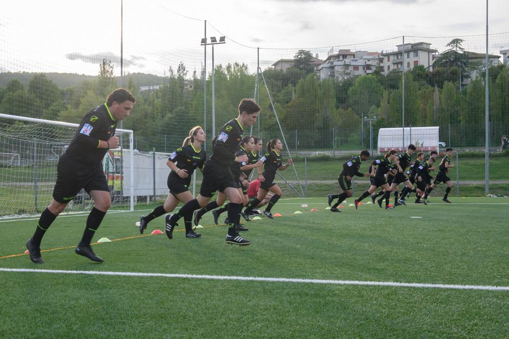
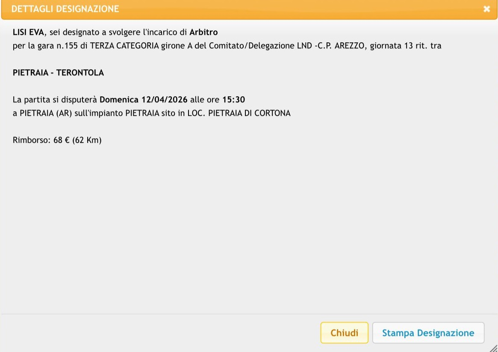

MARTEDI’:
allenamenti
"Allenarsi non è solo correre dietro a un pallone.
È prepararsi a prendere decisioni in un istante, a gestire l’imprevedibile, a essere sempre un passo avanti.
Per un arbitro, l’allenamento è la chiave per essere credibile, per essere rispettato, per essere giusto.
Non si tratta solo di resistenza fisica: è preparazione mentale, è studio del gioco, è consapevolezza di sé.
Ogni scatto, ogni esercizio, ogni simulazione serve a farti stare al centro del campo con la massima lucidità, anche quando la partita si scalda e le emozioni volano.
L’allenamento ti rende forte, ma è la testa a fare la differenza.
È lì che si decide se fischiare un fallo o se lasciar proseguire.
E per questo, ogni giorno, dobbiamo prepararci al meglio: corpo e mente."
È prepararsi a prendere decisioni in un istante, a gestire l’imprevedibile, a essere sempre un passo avanti.
Per un arbitro, l’allenamento è la chiave per essere credibile, per essere rispettato, per essere giusto.
Non si tratta solo di resistenza fisica: è preparazione mentale, è studio del gioco, è consapevolezza di sé.
Ogni scatto, ogni esercizio, ogni simulazione serve a farti stare al centro del campo con la massima lucidità, anche quando la partita si scalda e le emozioni volano.
L’allenamento ti rende forte, ma è la testa a fare la differenza.
È lì che si decide se fischiare un fallo o se lasciar proseguire.
E per questo, ogni giorno, dobbiamo prepararci al meglio: corpo e mente."

arriva la gara
"L'attesa della designazione è un mix di emozioni contrastanti.
L'ansia di sapere che partita ti attenderà il fine settimana successivo, la speranza di esser salito di categoria, il timore di deludere le aspettative. È un periodo di attesa snervante, dove ogni minuto sembra un'eternità.
E poi, finalmente, mentre ti stai addormentando…
Arriva la designazione.
La notifica sul telefono, il nome della partita, il luogo, l'orario. È un'ondata di euforia, un senso di orgoglio e di soddisfazione, anche se a volte capita di rimanere delusi perché non sempre si è soddisfatti della gara assegnata.
La tensione si scioglie, sostituita da una sensazione di eccitazione e di sfida.
Sei pronto a dare il massimo, a dimostrare a te stesso e agli altri di cosa sei capace."
L'ansia di sapere che partita ti attenderà il fine settimana successivo, la speranza di esser salito di categoria, il timore di deludere le aspettative. È un periodo di attesa snervante, dove ogni minuto sembra un'eternità.
E poi, finalmente, mentre ti stai addormentando…
Arriva la designazione.
La notifica sul telefono, il nome della partita, il luogo, l'orario. È un'ondata di euforia, un senso di orgoglio e di soddisfazione, anche se a volte capita di rimanere delusi perché non sempre si è soddisfatti della gara assegnata.
La tensione si scioglie, sostituita da una sensazione di eccitazione e di sfida.
Sei pronto a dare il massimo, a dimostrare a te stesso e agli altri di cosa sei capace."
